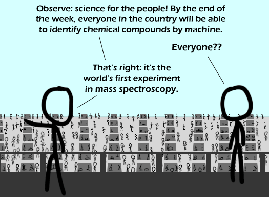

Comic JK 431
When I Feel Like It
⇤
<
?
>
⇥

⇤
<
?
>
⇥
Forum
.
RSS
.
Digg
.
Facebook
.
Reddit
.
Twitter
.
Stumbleupon
Enter your thoughts on number 431 here. Please, no spamming, trolling, or phreaking. I can see right through your mother using mass spectroscopy. I never noticed that your people have see-thru heads. > He is a witch. Burn him. >> Would blue heads be better then see-thru? >>>They're not see-thru, they're the color of the background; same effect, but, well, different. >>>> More like the color of the background and the people behind them >>>>>and no one remembers the comic where he referenced the seethru heads? >>>>>>I remember it being a reference, but I thought it was generated in the forums >>>>>>> see comic 336. Then see the rule broken in 366 (panel 2). AAAAAAAAAAAAAAAUUUUUUUUUUUUUUUUUUUUUGGGGGGGGGGGGGGGGGGHHHHHHHHHHHHHHHHHHHH BAD PUN GARBAGE COLLECT THIS BITCH! MUTHERFUCKING SHIT STINKING GARBAGE COLLECTOR. >"Muther"? >SORRY, I DID ACTUALLY MEAN MUTHAFUCKING. WELL SPOTTED. >>He's wurse at spelling than I are. (Gender ambiguous "he" their) >>>DAMN BITCH, YOUS BAD AT GRAMMAR AND SHIT. ... Bad at shit? Like, bad at shitting?